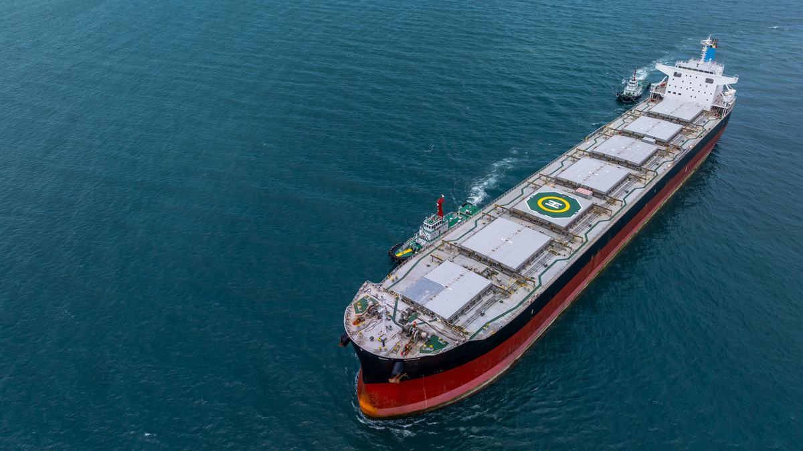

Guides
Plain-language explanations for people fixing their first ships. No sign-up needed.
How chartering works

What is demurrage?
Demurrage is money the charterer pays the shipowner when loading or discharging takes longer than the time the contract allows.

Laytime explained
Laytime is the time a voyage charter allows the charterer to load and discharge the cargo without paying extra.

Laycan: laydays and cancelling
Laycan is short for laydays and cancelling.

Voyage, time and bareboat charters
There are three ways to charter a whole ship.

What is a charter party?
A charter party is the contract between a shipowner and a charterer for the use of a ship.

What does a shipbroker do?
A shipbroker is an intermediary who finds a ship for a cargo, or a cargo for a ship, negotiates the terms between the two sides and follows the deal through.
How to charter a ship
Chartering a ship means hiring the whole vessel, for one voyage or for a period.
Notice of readiness
Notice of readiness, or NOR, is the notice a ship’s master gives the charterer that the ship has arrived and is ready to load or discharge.
Deadweight tonnage (DWT)
Deadweight tonnage, or DWT, is the total weight a ship can carry when loaded to its summer load line: cargo plus fuel, fresh water, stores and crew.

Worldscale
Worldscale is a published schedule of reference freight rates for tanker voyages.
Disponent owner
A disponent owner is a company that does not own a ship but controls it under a time or bareboat charter, and charters it out to someone else.
Statement of facts
A statement of facts is the timed record of everything that happened during a ship’s port call.
Bareboat charter
Under a bareboat charter, also called a demise charter, the owner hands over the ship with no crew.
Chartering by ship type
Bulk carrier chartering
Bulk carriers move dry cargo loose in their holds: grain, coal, ore, fertiliser, cement and steel.
Tanker chartering
Tankers carry liquids in bulk: crude oil, refined products, chemicals and vegetable oils.
Gas carrier chartering
Gas carriers move liquefied gases under pressure, refrigeration or both: LPG, ammonia, petrochemical gases and LNG.
Container ship chartering
Whole container ships are chartered by liner operators and regional carriers, almost always by the day.
Multipurpose and heavy-lift ship chartering
Multipurpose and heavy-lift ships carry what does not fit a bulk carrier or a container: project cargo, machinery, wind turbine parts, steel, timber and bagged goods..
Vehicle carrier and ro-ro chartering
Vehicle carriers and ro-ro ships load cargo on wheels over a ramp: cars, trucks, trailers and heavy machinery.
Ship sizes
Ship sizes and classes
Every size class of tanker, bulk carrier, gas carrier and container ship.
VLCC
A VLCC, or very large crude carrier, is an oil tanker of roughly 200,000 to 320,000 deadweight tonnes.
Suezmax
A Suezmax is the largest tanker that can pass through the Suez Canal fully laden: roughly 120,000 to 200,000 deadweight tonnes, carrying about one million barrels..
Aframax
An Aframax is a mid-sized oil tanker of roughly 80,000 to 120,000 deadweight tonnes, carrying 600,000 to 750,000 barrels.
Panamax
A Panamax is a ship built to the largest dimensions that fit the original locks of the Panama Canal: 32.3 m beam, about 294 m long and 12 m draught.
Capesize
A Capesize is a large bulk carrier of roughly 120,000 to 200,000 deadweight tonnes, most often around 180,000.
Supramax
A Supramax is a geared bulk carrier of roughly 50,000 to 60,000 deadweight tonnes, with five holds and four cranes.
Handysize
A Handysize is a small geared bulk carrier of roughly 10,000 to 40,000 deadweight tonnes.
Kamsarmax
A Kamsarmax is a bulk carrier of about 82,000 deadweight tonnes, built to the longest hull that can berth at Port Kamsar in Guinea: 229 metres..
Ultramax
An Ultramax is a geared bulk carrier of roughly 60,000 to 67,000 deadweight tonnes: the larger, more fuel-efficient successor to the Supramax..
Handymax
A Handymax is a geared bulk carrier of roughly 40,000 to 50,000 deadweight tonnes, between the Handysize and the Supramax..
Newcastlemax
A Newcastlemax is a bulk carrier of about 200,000 to 210,000 deadweight tonnes, the largest that can enter the coal port of Newcastle in Australia..
MR tanker
An MR, or medium range, tanker is a product tanker of roughly 35,000 to 55,000 deadweight tonnes.
LR1
An LR1, or Long Range 1, is a product tanker of roughly 55,000 to 80,000 deadweight tonnes.
LR2
An LR2, or Long Range 2, is a product tanker of roughly 80,000 to 120,000 deadweight tonnes.